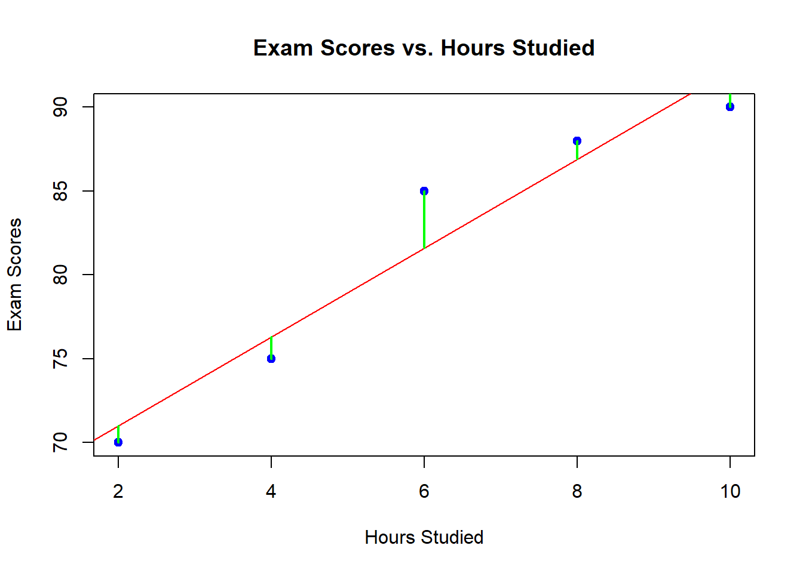
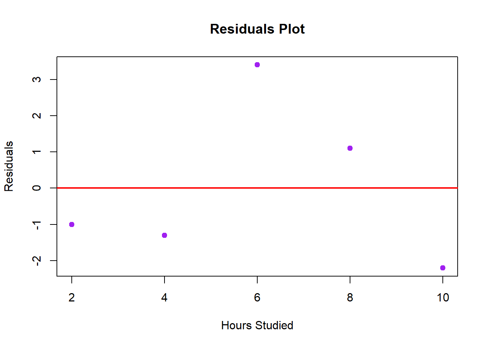
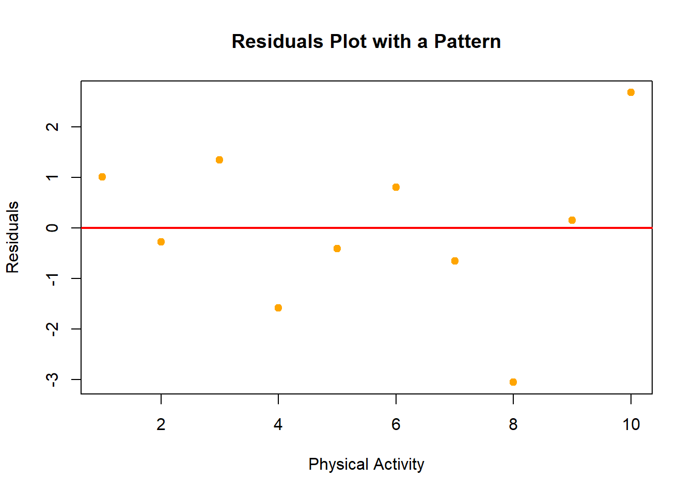
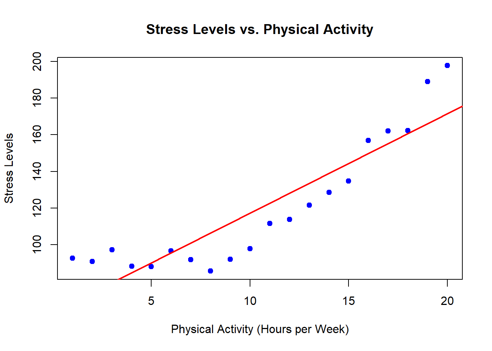
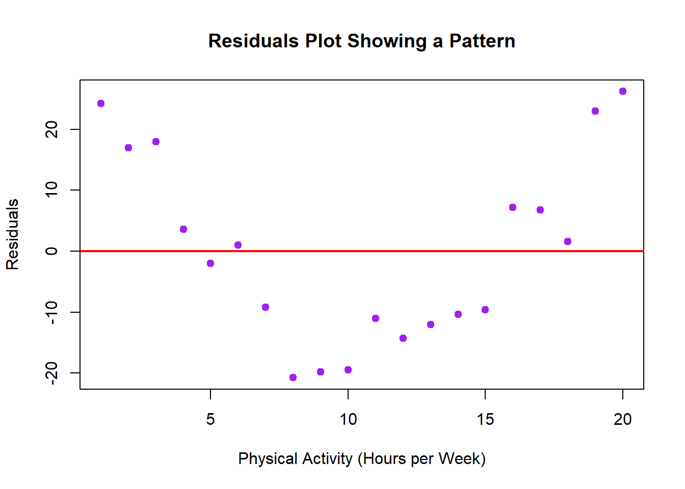
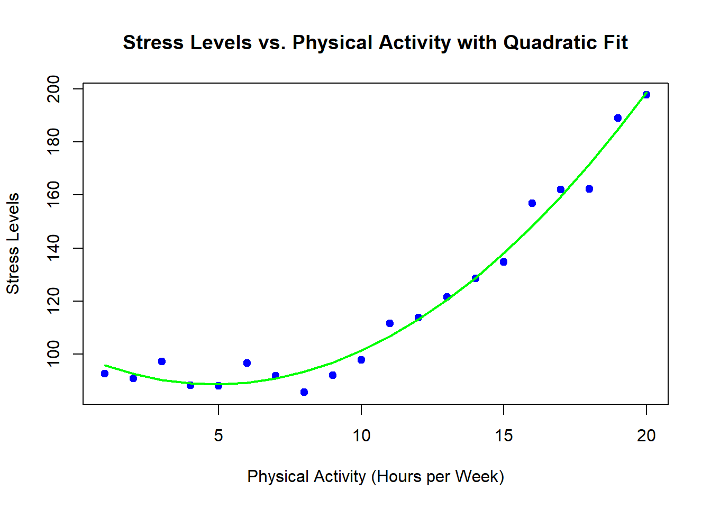
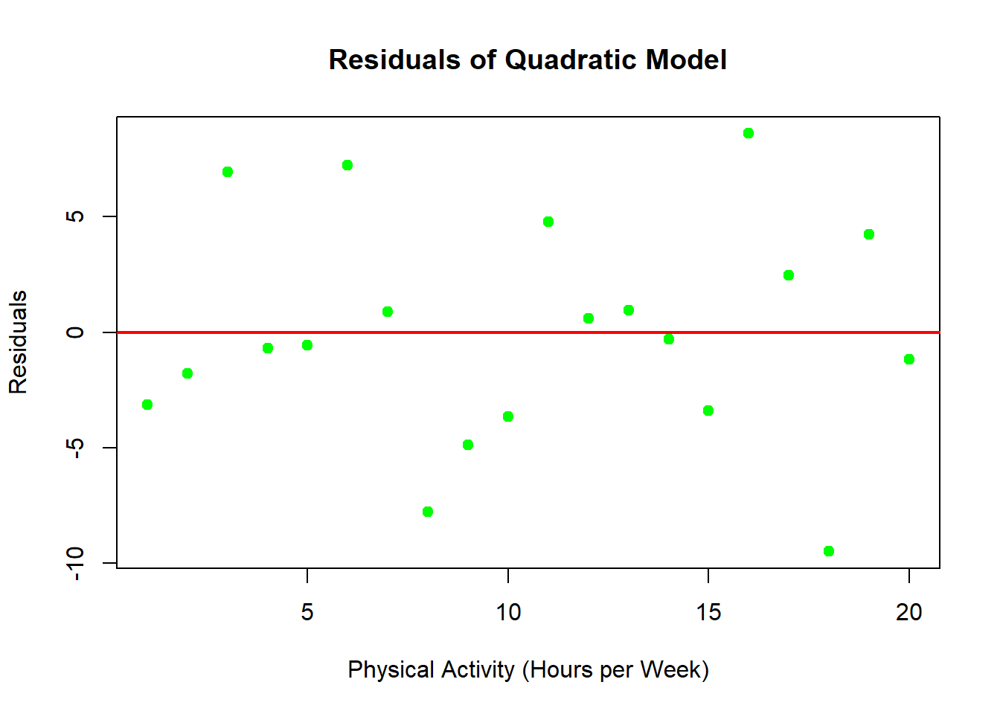
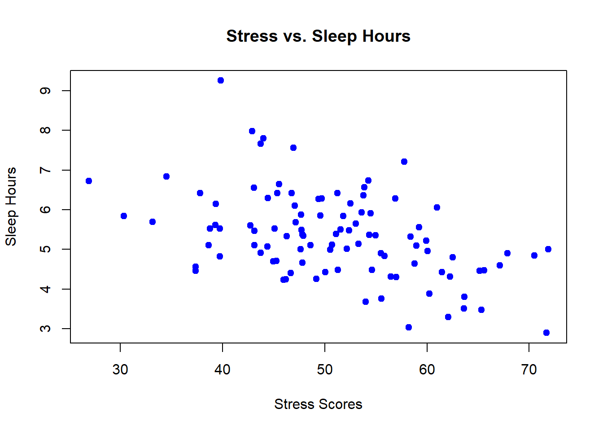
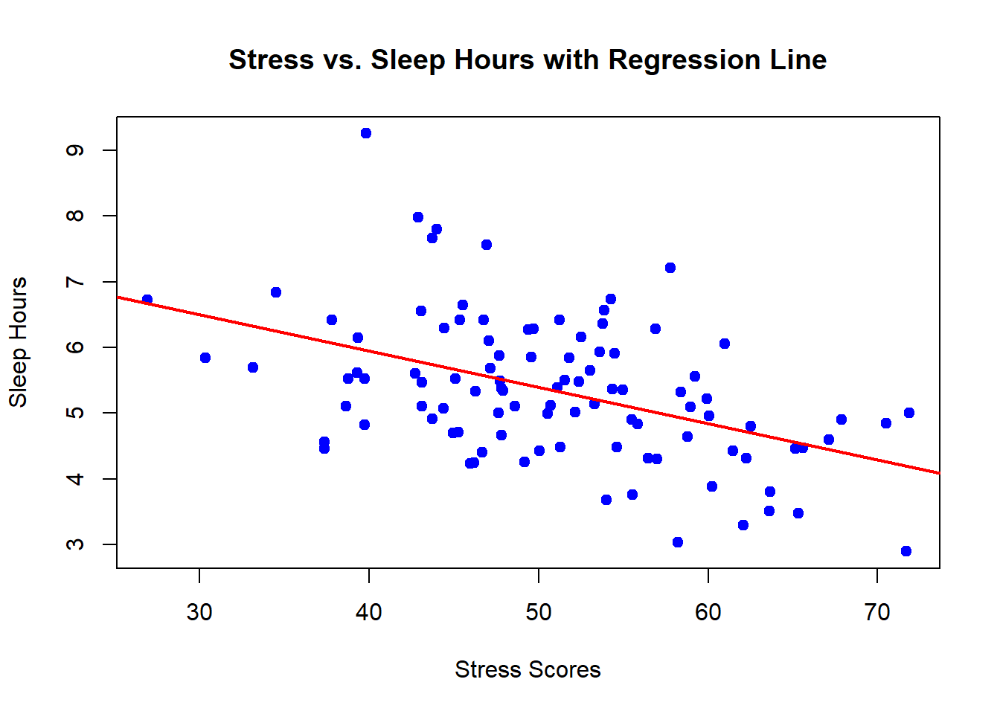

Chapter 10 Bivariate Linear Models
10.1 What Are Bivariate Linear Models?
Bivariate linear models are statistical tools that allow researchers to examine the relationship between two continuous variables. In psychology and other fields, understanding how one variable relates to another is often crucial for drawing meaningful conclusions from data. For example, you might want to know if there is a relationship between the number of hours a student studies and their exam scores, or between a person’s age and their reaction time in a cognitive task.
At its core, a bivariate linear model aims to describe the relationship between these two variables using a straight line. This line, known as the “regression line” or “line of best fit,” is determined by the data and provides a way to summarize the relationship in a simple, interpretable manner.
- Two Continuous Variables: In a bivariate linear model, both the predictor (independent) variable and the outcome (dependent) variable are continuous. Continuous variables can take any value within a range. For example, “hours studied” can range from 0 to any number, and “exam score” can range from 0 to 100.
- Linear Relationship: The relationship described by a bivariate linear model is linear, meaning that as one variable increases or decreases, the other variable tends to increase or decrease in a consistent, proportional manner. The strength and direction of this relationship are captured by the slope of the line.
Understanding relationships between variables is fundamental in psychological research. For instance, psychologists might explore whether higher levels of stress are associated with lower levels of sleep, or if a particular therapy is associated with improved mental health outcomes. Bivariate linear models provide a straightforward way to explore and quantify these relationships.
Examples from Everyday Life: - Hours Studied and Exam Scores: Imagine you are studying for an exam, and you want to know if studying more hours is likely to result in a higher score. By plotting your study hours against your exam scores and fitting a line, you can see if there is a positive relationship—meaning that more study hours generally lead to higher exam scores.
- Age and Reaction Time: Another example could be examining the relationship between age and reaction time. As people age, their reaction time might increase (indicating slower responses). A bivariate linear model could help visualize and quantify this relationship, showing whether older individuals tend to have slower reaction times than younger individuals.
By examining these relationships, bivariate linear models allow researchers to make predictions and gain insights into how variables interact with each other.
10.1.1 Why Use Bivariate Linear Models?
Bivariate linear models are incredibly useful in testing hypotheses and making predictions about the relationships between two variables. When researchers have a theory that one variable might influence another, they can use a bivariate linear model to test this theory and determine if the data supports their hypothesis.
Relevance of Bivariate Linear Models in Testing Hypotheses:
- Hypothesis Testing: Suppose a psychologist hypothesizes that increased physical activity is associated with reduced anxiety levels. By collecting data on individuals’ physical activity and their anxiety scores, the psychologist can use a bivariate linear model to test whether there is a significant relationship between these two variables. The model will help determine if higher physical activity levels predict lower anxiety scores.
- Prediction: Bivariate linear models also allow researchers to make predictions about one variable based on the value of another. For instance, if there is a known relationship between study hours and exam scores, you could predict a student’s exam score based on the number of hours they studied.
Practical Examples:
- Predicting Exam Scores: If you know that, historically, each additional hour of study leads to an increase in exam score, you can use this relationship to predict future exam scores for students based on how many hours they study.
- Understanding Correlations: Bivariate linear models help researchers understand correlations between variables. For example, if there is a positive correlation between self-esteem and academic performance, a linear model can quantify how much of an increase in self-esteem might be associated with an increase in academic performance.
The Goal of Finding a “Best Fit” Line: The “best fit” line in a bivariate linear model is the line that most closely approximates the data points in the dataset. The goal is to find the line that minimizes the distance between the observed data points and the line itself. This line represents the average relationship between the two variables.
- Best Fit Line: The best fit line is essentially a summary of the relationship between the two variables. It provides a simple equation that can be used to predict the outcome variable based on the predictor variable. For example, if you know the relationship between hours studied and exam scores, you can use the equation of the line to predict a student’s score based on the number of hours they studied.
- Interpretability: One of the key advantages of bivariate linear models is their interpretability. The model provides a clear and straightforward way to understand how one variable relates to another, which can be crucial for making informed decisions in research and everyday life.
In summary, bivariate linear models are powerful tools for understanding and predicting relationships between variables. By finding the best fit line that summarizes the relationship, researchers can make meaningful inferences and test hypotheses that advance our understanding of various phenomena in psychology and other fields.
10.2 Creating Linear Models to Test Hypotheses
In this section, we will explore how linear models can be used to test hypotheses about relationships between variables. We will break down the concept of a linear equation and walk through the process of creating a simple linear model. Additionally, we will introduce the idea of hypothesis testing within the context of linear models, helping you understand how researchers determine whether the relationships they observe are meaningful.
10.2.1 The Concept of a Linear Model
What is a Linear Model?
A linear model is a mathematical tool used to describe the relationship between two variables. The relationship is represented by a straight line, which can be expressed by the equation:
\[ y = mx + b \]
- y: This is the outcome variable, also known as the dependent
variable. It’s what you’re trying to predict or explain. For
example, if you’re interested in predicting exam scores, then
ywould represent the exam score. - x: This is the predictor variable, also known as the independent
variable. It’s the variable you believe influences the outcome.
Continuing with the example,
xmight represent the number of hours studied. - m: This is the slope of the line. The slope tells you how much
ychanges for each unit change inx. In other words, it shows the relationship between the predictor and outcome variables. Ifmis positive, asxincreases,yincreases as well; ifmis negative, asxincreases,ydecreases. - b: This is the intercept, or the point where the line crosses
the y-axis. The intercept represents the value of
ywhenxis zero. In the context of our example,bwould be the predicted exam score if the student studied for zero hours.
Let’s consider a simple, relatable example:
Example: Predicting Exam Scores Based on Hours Studied
Imagine you’re a student who wants to know how the number of hours you study might affect your exam score. You’ve collected some data from your own study habits and exam scores over the past semester. Here’s how you can create a linear model to represent this relationship:
Collect Data: You start by gathering data on how many hours you studied for each exam and the corresponding scores you received. Let’s say you have the following data:
Hours Studied (x) Exam Score (y) 2 70 4 75 6 80 8 85 10 90 Plot the Data: Before creating the model, you can plot the data on a graph, with the number of hours studied on the x-axis and the exam score on the y-axis. You’ll see that as the number of hours studied increases, the exam score also increases.
Fit a Line: Next, you want to find the line that best fits the data points. This line represents the linear model. The line can be described by the equation:
\[ \text{Exam Score} = (m \times \text{Hours Studied}) + b \]
- Based on the data, suppose you find that the slope (
m) is 2.5 and the intercept (b) is 65. This gives you the equation:
\[ \text{Exam Score} = 2.5 \times \text{Hours Studied} + 65 \]
- Based on the data, suppose you find that the slope (
Interpret the Model: This equation tells you that for every additional hour you study, your exam score is expected to increase by 2.5 points. If you study for zero hours, the model predicts that you would score 65 points on the exam.
Use the Model to Make Predictions: Now, you can use this model to predict your exam score based on how many hours you plan to study. For example, if you plan to study for 7 hours, you can plug that into the equation:
\[ \text{Exam Score} = 2.5 \times 7 + 65 = 82.5 \]
The model predicts that if you study for 7 hours, you can expect to score around 82.5 points on the exam.
This simple linear model allows you to quantify the relationship between hours studied and exam scores, helping you make informed decisions about how much time to dedicate to studying.
10.2.2 Hypothesis Testing with Linear Models
What is Hypothesis Testing?
Hypothesis testing is a method used by researchers to determine whether
the relationships they observe in data are statistically significant or
could have occurred by chance. When using a linear model, you’re often
testing a hypothesis about whether there is a meaningful relationship
between the predictor variable (x) and the outcome variable (y).
Statistical Significance:
When you create a linear model, you’re interested in whether the slope
(m) is significantly different from zero. If the slope is zero, it
means there is no relationship between x and y; if it’s not zero,
there is a relationship.
- Null Hypothesis (H0): The slope (
m) is equal to zero, meaning there is no relationship between the two variables. - Alternative Hypothesis (H1): The slope (
m) is not equal to zero, meaning there is a relationship between the two variables.
To determine whether to accept or reject the null hypothesis, we look at the p-value.
What is a P-Value?
The p-value is a number that helps you decide whether the observed relationship in your data is statistically significant. It tells you the probability of obtaining your observed results (or something more extreme) if the null hypothesis were true.
- Low p-value (< 0.05): There is strong evidence against the null hypothesis, so you reject the null hypothesis. This means you have a statistically significant relationship between the variables.
- High p-value (> 0.05): There is not enough evidence to reject the null hypothesis, so you fail to reject the null hypothesis. This means the relationship between the variables might not be significant.
Example: Testing the Relationship Between Physical Activity and Stress Levels
Let’s say a researcher wants to know if there is a significant relationship between physical activity and stress levels. The hypothesis is that more physical activity is associated with lower stress levels.
Collect Data: The researcher collects data from a group of participants, recording the number of hours they engage in physical activity each week (
x) and their stress levels on a scale from 0 to 100 (y).Create a Linear Model: The researcher fits a linear model to the data:
\[ \text{Stress Level} = m \times \text{Physical Activity} + b \]
Suppose the researcher finds that
m = -3andb = 70. This suggests that for each additional hour of physical activity, stress levels decrease by 3 points.Hypothesis Testing: The researcher calculates a p-value to determine whether the slope of -3 is significantly different from zero.
- P-value < 0.05: If the p-value is less than 0.05, the researcher rejects the null hypothesis and concludes that there is a significant relationship between physical activity and stress levels. In this case, the more physically active people are, the lower their stress levels tend to be.
- P-value > 0.05: If the p-value is greater than 0.05, the researcher fails to reject the null hypothesis and concludes that the relationship between physical activity and stress levels is not statistically significant.
Interpret the Results: If the relationship is significant, the researcher might suggest that increasing physical activity could be an effective way to reduce stress. If the relationship is not significant, the researcher might look for other factors that could be influencing stress levels.
Summary of Hypothesis Testing with Linear Models:
Hypothesis testing with linear models allows researchers to determine whether the relationships they observe in data are statistically significant. By examining the slope of the line and calculating the p-value, researchers can make informed decisions about the nature of the relationship between variables, helping to advance knowledge in psychology and other fields.
In the next sections, we will explore the individual components of a linear model in greater detail, helping you to understand how each part contributes to the overall model and what it means in the context of your data.
10.3 Components of a Bivariate Linear Model
In a bivariate linear model, there are three key components that help describe the relationship between two variables: the intercept, the slope, and the correlation coefficient. Understanding each of these components is crucial for interpreting what the model tells you about the data.
10.3.1 Intercept (b0)
What is the Intercept?
The intercept is the point where the line of best fit crosses the
y-axis on a graph. In mathematical terms, it’s represented as b0 in
the equation of the line:
\[ y = b1 \times x + b0 \]
- y: This is the outcome variable, or the variable you are trying to predict or explain.
- x: This is the predictor variable, the variable you believe influences the outcome.
- b1: This is the slope, which we’ll discuss shortly.
- b0: This is the intercept, the value of
ywhenxis zero.
What Does the Intercept Represent?
The intercept (b0) tells you the expected value of the outcome
variable when the predictor variable is zero. Essentially, it answers
the question: “What would the outcome be if the predictor had no effect
(i.e., was zero)?”
Real-World Example:
Let’s go back to our example of predicting exam scores based on hours studied.
Suppose you have the following linear model equation:
\[ \text{Exam Score} = 2.5 \times \text{Hours Studied} + 65 \]
- b0 (Intercept) = 65: This means that if a student doesn’t study at all (0 hours studied), their predicted exam score would be 65.
The intercept gives you a starting point for your predictions. It’s like asking, “If nothing happens (no study time), what can I expect?”
Why is the Intercept Important?
The intercept is crucial because it anchors the entire model. Without it, the line of best fit wouldn’t have a defined starting point. It’s particularly useful when you want to understand the baseline level of your outcome variable. For example, if you know that a student who studies zero hours is predicted to score 65, you can begin to understand the impact of studying on improving that score.
10.3.2 Slope(s) (b1)
What is the Slope?
The slope is the part of the linear equation that tells you how much
the outcome variable (y) changes for each one-unit change in the
predictor variable (x). In our equation, the slope is represented as
b1:
\[ y = b1 \times x + b0 \]
What Does the Slope Represent?
The slope (b1) shows the strength and direction of the relationship
between the two variables. It answers the question: “How much does y
change when x increases by one unit?”
Real-World Example:
Continuing with our exam score example:
\[ \text{Exam Score} = 2.5 \times \text{Hours Studied} + 65 \]
- b1 (Slope) = 2.5: This means that for every additional hour a student studies, their exam score is expected to increase by 2.5 points.
The slope gives you insight into how much influence the predictor variable has on the outcome variable. If the slope is steep, small changes in the predictor lead to large changes in the outcome.
Positive vs. Negative Slopes:
- Positive Slope: If
b1is positive, asxincreases,yalso increases. For example, as hours studied increases, exam scores increase. - Negative Slope: If
b1is negative, asxincreases,ydecreases. For example, if the slope were negative, it would mean that as hours studied increases, exam scores decrease, which might be the case if students were over-studying and burning out.
Why is the Slope Important?
The slope is critical for understanding the relationship between the variables. It tells you not just whether there is a relationship, but also how strong that relationship is and in what direction. For instance, if the slope were 10 instead of 2.5, it would suggest that studying has a much larger impact on exam scores.
10.3.3 Correlations
What is a Correlation Coefficient?
The correlation coefficient is a statistical measure that describes the strength and direction of the linear relationship between two variables. It’s a number that ranges from -1 to +1:
- +1: A perfect positive linear relationship. As one variable increases, the other increases in a perfectly predictable way.
- -1: A perfect negative linear relationship. As one variable increases, the other decreases in a perfectly predictable way.
- 0: No linear relationship. Changes in one variable do not predict changes in the other.
Understanding the Correlation Coefficient:
- Positive Correlation: If the correlation coefficient is positive (e.g., +0.8), it means that as one variable increases, the other also tends to increase. For example, as the number of hours studied increases, exam scores tend to increase.
- Negative Correlation: If the correlation coefficient is negative (e.g., -0.6), it means that as one variable increases, the other tends to decrease. For example, as age increases, reaction time might decrease, meaning older individuals have slower reaction times.
- Magnitude of Correlation: The closer the correlation coefficient is to +1 or -1, the stronger the linear relationship between the two variables. A coefficient close to 0 indicates a weak or no linear relationship.
Real-World Example:
Consider a study examining the relationship between age and reaction time. Researchers might find a correlation coefficient of -0.7:
- Correlation = -0.7: This indicates a strong negative relationship, meaning that as age increases, reaction time tends to slow down (reaction time increases). The closer the correlation is to -1, the stronger this relationship is.
Why is Correlation Important in Linear Models?
The correlation coefficient complements the slope by quantifying the strength of the relationship between the two variables. While the slope tells you the direction and rate of change, the correlation coefficient tells you how well the predictor variable explains changes in the outcome variable.
When interpreting a linear model, it’s important to consider both the slope and the correlation. A strong slope with a high correlation suggests a reliable, meaningful relationship, while a weak slope with a low correlation suggests that the relationship may not be as strong or that other factors are at play.
Summary of Components:
- Intercept (b0): The starting point of the model, telling you the expected value of the outcome variable when the predictor is zero.
- Slope (b1): The rate of change in the outcome variable for each one-unit change in the predictor variable, showing the direction and strength of the relationship.
- Correlation: The overall strength and direction of the relationship between the two variables, providing a measure of how well the linear model fits the data.
By understanding these components, you can interpret the results of a bivariate linear model more effectively, making informed decisions based on the relationships within your data.
10.4 Residuals
In this section, we’ll explore residuals, an essential concept in understanding how well a linear model fits the data. We’ll explain what residuals are, why they matter, and how to visualize them using plots in R.
10.4.1 What Are Residuals?
What Are Residuals?
Residuals are the differences between the observed values (the actual data points) and the values predicted by the linear model. These residuals represent the “error” in the model, showing how much the model’s predictions deviate from the actual data.
For any given data point, the residual can be calculated using the formula:
\[ \text{Residual} = \text{Observed Value} - \text{Predicted Value} \]
- Observed Value: This is the actual value of the outcome variable
- for a particular data point.
- Predicted Value: This is the value that the linear model predicts for the outcome variable (y) based on the predictor variable (x) and the equation of the line.
Introduction to the Concept of “Error” in a Model
No model is perfect, which is why the concept of residuals is so important. Residuals represent the “error” in the model—how much the actual data deviates from what the model predicts. The goal is to minimize these residuals, making the model as accurate as possible.
Example: Calculating Residuals in a Simple Linear Model
Let’s revisit our example of predicting exam scores based on hours studied. Suppose we have the following data:
| Hours Studied (x) | Exam Score (Observed Value) (y) | Predicted Exam Score (y’) | Residual (y - y’) |
|---|---|---|---|
| 2 | 70 | 70 | 0 |
| 4 | 75 | 75 | 0 |
| 6 | 85 | 80 | 5 |
| 8 | 88 | 85 | 3 |
| 10 | 90 | 90 | 0 |
In this example, if a student studied for 6 hours, the actual exam score was 85, but the model predicted a score of 80. The residual is 5, indicating that the model underpredicted by 5 points. Similarly, for 8 hours of study, the residual is 3 points.
To visualize these residuals, let’s plot them in R.
# Simulating data
hours_studied <- c(2, 4, 6, 8, 10)
exam_scores <- c(70, 75, 85, 88, 90)
# Creating a linear model
model <- lm(exam_scores ~ hours_studied)
# Predicting values
predicted_scores <- predict(model)
# Calculating residuals
residuals <- exam_scores - predicted_scores
# Plotting the data
plot(hours_studied, exam_scores, main = "Exam Scores vs. Hours Studied",
xlab = "Hours Studied", ylab = "Exam Scores", pch = 19, col = "blue")
abline(model, col = "red")
# Adding residual lines
segments(hours_studied, exam_scores, hours_studied, predicted_scores, col = "green", lwd = 2)
This plot shows the relationship between hours studied and exam scores, with the red line representing the linear model. The green lines are the residuals, showing the distance between the actual exam scores and the scores predicted by the model.
10.4.2 Importance of Residuals in Model Evaluation
Why Are Residuals Important?
Residuals play a crucial role in evaluating the fit of a linear model. By analyzing the residuals, we can assess how well the model represents the data.
- Fit of the Model: A good model will have small, random residuals that are evenly distributed around zero. This indicates that the model’s predictions are close to the actual data points.
- Model Accuracy: The smaller the residuals, the closer the model’s predictions are to the actual values, which enhances the model’s accuracy.
Example: Visualizing Residuals in a Scatter Plot
Visualizing residuals helps you understand where the model is accurate and where it might be off. A common way to do this is by plotting the residuals against the predictor variable.
# Plotting residuals
plot(hours_studied, residuals, main = "Residuals Plot",
xlab = "Hours Studied", ylab = "Residuals", pch = 19, col = "purple")
abline(h = 0, col = "red", lwd = 2)
In this residuals plot: - The x-axis represents the predictor variable (hours studied). - The y-axis represents the residuals (the difference between actual and predicted exam scores). - The red line at y = 0 represents perfect prediction (no residual).
If the residuals are randomly scattered around the red line without any clear pattern, this suggests that the model is appropriate and has captured the relationship well. However, if the residuals show a systematic pattern (e.g., they increase or decrease consistently), it suggests that the model might not be capturing all aspects of the relationship.
10.4.3 Checking for Patterns in Residuals
Why Check for Patterns in Residuals?
Checking for patterns in residuals is important because it helps you determine whether the linear model is appropriate for the data. Ideally, residuals should be randomly distributed around zero, indicating that the model has captured the relationship well.
What Patterns Should You Look For?
- Random Distribution: If residuals are randomly scattered around zero, it indicates that the model is fitting the data well.
- Systematic Patterns: If residuals show a pattern (e.g., they form a curve or systematically increase/decrease), it might suggest that the relationship isn’t linear and that a different model might be more appropriate.
Example: Identifying Potential Issues with a Model Based on Residual Patterns
Let’s say you’re examining the residuals from a model predicting stress levels based on physical activity. You might plot the residuals and notice a systematic pattern:
# Example: Simulating residuals with a pattern
set.seed(123)
activity <- 1:10
stress <- c(100, 95, 90, 87, 85, 80, 78, 76, 75, 74) + rnorm(10, sd = 2)
model2 <- lm(stress ~ activity)
predicted_stress <- predict(model2)
residuals2 <- stress - predicted_stress
# Plotting residuals
plot(activity, residuals2, main = "Residuals Plot with a Pattern",
xlab = "Physical Activity", ylab = "Residuals", pch = 19, col = "orange")
abline(h = 0, col = "red", lwd = 2)
If you notice that the residuals aren’t randomly distributed but instead form a curve or pattern, it might indicate that a simple linear model isn’t the best fit for the data. The model might be systematically over- or under-predicting the outcome for certain ranges of the predictor variable.
Summary of Residuals:
- Residuals represent the differences between observed and predicted values, highlighting the errors in a model’s predictions.
- Minimizing residuals is crucial for improving model accuracy, as smaller residuals indicate a better fit.
- Visualizing residuals helps you assess whether the model is appropriate, with random residuals suggesting a good fit and patterns indicating potential issues.
By understanding and analyzing residuals, you can gain deeper insights into the performance of your linear model and identify areas for improvement.
10.4.4 Example: Residuals with a Pattern (Non-Normal Distribution)
Sometimes, when you plot the residuals of your model, you might notice that they are not randomly scattered around zero. Instead, they might show a pattern, indicating that the model is not fully capturing the relationship between the variables. This can suggest that a simple linear model might not be appropriate.
Let’s go through an example where the residuals show a clear pattern, indicating potential issues with the model.
Simulated Example with a Pattern in Residuals
Suppose we have data on the relationship between the amount of physical activity (measured in hours per week) and stress levels (measured on a scale from 0 to 100). We suspect that more physical activity might reduce stress levels, but the relationship might not be perfectly linear.
We’ll simulate some data where the relationship between physical activity and stress levels is quadratic rather than linear, meaning that after a certain point, additional physical activity doesn’t continue to reduce stress as effectively.
# Simulating data with a quadratic relationship
set.seed(123)
activity <- 1:20
stress <- 100 - 5 * activity + 0.5 * activity^2 + rnorm(20, sd = 5)
# Creating a linear model
model3 <- lm(stress ~ activity)
predicted_stress <- predict(model3)
residuals3 <- stress - predicted_stress
# Plotting the original data
plot(activity, stress, main = "Stress Levels vs. Physical Activity",
xlab = "Physical Activity (Hours per Week)", ylab = "Stress Levels", pch = 19, col = "blue")
abline(model3, col = "red", lwd = 2)
In the plot above, we’ve simulated data with a quadratic relationship, but we’ve fitted a simple linear model (the red line). Now, let’s plot the residuals to see if there’s a pattern.
# Plotting residuals with a pattern
plot(activity, residuals3, main = "Residuals Plot Showing a Pattern",
xlab = "Physical Activity (Hours per Week)", ylab = "Residuals", pch = 19, col = "purple")
abline(h = 0, col = "red", lwd = 2)
Interpreting the Residuals Plot
In the residuals plot:
- The residuals are not randomly scattered around the horizontal line at zero.
- Instead, they show a curved pattern, indicating that the model systematically underpredicts stress at low levels of activity and overpredicts it at higher levels.
This pattern suggests that the linear model is not adequately capturing the true relationship between physical activity and stress. Specifically, the quadratic nature of the relationship means that a simple straight line (linear model) isn’t flexible enough to fit the data well.
What to Do About It
When you encounter a pattern in the residuals like this, it indicates that a linear model might not be the best choice. Here are some steps you can take:
- Consider a Polynomial Model:
- Since the residuals suggest a quadratic relationship, you might consider fitting a polynomial model that includes a squared term for the predictor variable.
- This would allow the model to account for the curvature in the data.
# Fitting a quadratic (polynomial) model
model_poly <- lm(stress ~ activity + I(activity^2))
predicted_stress_poly <- predict(model_poly)
# Plotting the quadratic model
plot(activity, stress, main = "Stress Levels vs. Physical Activity with Quadratic Fit",
xlab = "Physical Activity (Hours per Week)", ylab = "Stress Levels", pch = 19, col = "blue")
lines(activity, predicted_stress_poly, col = "green", lwd = 2)
In this plot, the green line represents the quadratic fit, which better captures the curvature in the data compared to the linear model.
- Re-check the Residuals:
- After fitting a more appropriate model, it’s essential to check the residuals again to ensure that they are now randomly distributed and that the model is a better fit for the data.
# Plotting residuals of the quadratic model
residuals_poly <- residuals(model_poly)
plot(activity, residuals_poly, main = "Residuals of Quadratic Model",
xlab = "Physical Activity (Hours per Week)", ylab = "Residuals", pch = 19, col = "green")
abline(h = 0, col = "red", lwd = 2)
In the residuals plot for the quadratic model, the residuals should now be more randomly scattered around zero, indicating a better fit.
- Consider Other Models:
- If a polynomial model doesn’t resolve the issue, consider exploring other types of models, such as logarithmic or exponential models, depending on the nature of the data.
Summary
In this section, we’ve seen that residuals are a powerful diagnostic tool for understanding the fit of a linear model. When residuals show a clear pattern rather than being randomly distributed, it suggests that the model isn’t fully capturing the relationship between the variables. By identifying and addressing these patterns—such as by using a polynomial model—you can improve the accuracy and reliability of your predictions.
10.5 Real-World Application of Bivariate Linear Models
Bivariate linear models are widely used in psychological research to explore and understand relationships between variables. In this section, we’ll dive into practical examples of how these models are applied in psychology, walk through creating a bivariate linear model in R, and discuss the limitations and considerations of using these models.
10.5.1 Practical Examples in Psychological Research
Overview of Bivariate Linear Models in Psychological Research
Bivariate linear models are powerful tools that psychologists use to analyze the relationships between two variables. These models help researchers understand how one variable might predict or influence another, allowing for insights into behaviors, attitudes, and outcomes. The simplicity and interpretability of bivariate linear models make them especially useful in psychological studies.
Examples of Studies Using Bivariate Linear Models
- Self-Esteem and Academic Performance:
- A researcher might hypothesize that higher self-esteem is associated with better academic performance. By collecting data on students’ self-esteem scores and their GPA, a bivariate linear model can be used to explore whether there is a significant positive relationship between these two variables.
- The model could help determine if students with higher self-esteem tend to have higher GPAs, potentially informing interventions to improve academic outcomes by boosting self-esteem.
- Anxiety Levels and Sleep Quality:
- Another common research question might involve the relationship between anxiety levels and sleep quality. A psychologist might gather data on participants’ anxiety scores and the number of hours they sleep each night.
- Using a bivariate linear model, the researcher could test whether higher anxiety levels predict poorer sleep quality (e.g., fewer hours of sleep), which could have important implications for treatment strategies aimed at reducing anxiety to improve sleep.
- Exercise and Depression:
- In a study examining the effects of exercise on mental health, researchers might look at the relationship between the number of hours spent exercising each week and depression scores. A bivariate linear model could reveal whether increased physical activity is associated with lower levels of depression.
These examples illustrate how bivariate linear models are used in psychological research to explore important relationships between variables. By quantifying these relationships, researchers can make data-driven decisions and develop effective interventions.
10.5.2 Building Your Own Bivariate Linear Model in R
Step-by-Step Guide to Creating a Bivariate Linear Model in R
Now that we’ve explored some practical examples, let’s walk through the process of creating a bivariate linear model in R using a real dataset. We’ll use a psychological dataset to explore a simple relationship between two variables.
Example: Exploring the Relationship Between Stress and Sleep
Let’s say we’re interested in examining whether higher levels of stress are associated with poorer sleep quality. We have a dataset that includes participants’ stress scores and the number of hours they sleep each night.
Here’s how to build a bivariate linear model to analyze this relationship:
- Load the Data:
- First, load your dataset into R. For this example, let’s simulate some data.
# Simulating a psychological dataset
set.seed(123)
stress <- rnorm(100, mean = 50, sd = 10) # Stress scores (out of 100)
sleep_hours <- 8 - 0.05 * stress + rnorm(100, mean = 0, sd = 1) # Sleep hours
# Combine into a data frame
data <- data.frame(stress, sleep_hours)- Visualize the Data:
- Before fitting the model, it’s helpful to visualize the data to get a sense of the relationship.
# Plotting the data
plot(data$stress, data$sleep_hours, main = "Stress vs. Sleep Hours",
xlab = "Stress Scores", ylab = "Sleep Hours", pch = 19, col = "blue")
- Create the Linear Model:
- Use the
lm()function in R to create a linear model that predicts sleep hours based on stress scores.
- Use the
- Interpret the Model Output:
- After fitting the model, use the
summary()function to view the model’s output and interpret the coefficients, p-values, and residuals.
- After fitting the model, use the
##
## Call:
## lm(formula = sleep_hours ~ stress, data = data)
##
## Residuals:
## Min 1Q Median 3Q Max
## -1.9073 -0.6835 -0.0875 0.5806 3.2904
##
## Coefficients:
## Estimate Std. Error t value Pr(>|t|)
## (Intercept) 8.15956 0.55265 14.764 < 2e-16 ***
## stress -0.05525 0.01069 -5.169 1.24e-06 ***
## ---
## Signif. codes: 0 '***' 0.001 '**' 0.01 '*' 0.05 '.' 0.1 ' ' 1
##
## Residual standard error: 0.9707 on 98 degrees of freedom
## Multiple R-squared: 0.2142, Adjusted R-squared: 0.2062
## F-statistic: 26.72 on 1 and 98 DF, p-value: 1.242e-06Understanding the Output:
- Coefficients:
- Intercept (b0): This is the predicted value of sleep hours when the stress score is zero. It represents the baseline level of sleep when there is no stress.
- Slope (b1): This coefficient tells us how much sleep hours change for each one-unit increase in stress. A negative slope would suggest that as stress increases, sleep decreases.
- P-Values:
- The p-value associated with the slope helps you determine whether the relationship between stress and sleep is statistically significant. If the p-value is less than 0.05, you can conclude that there is a significant relationship between the two variables.
- Residuals:
- The residuals are the differences between the observed sleep hours and the sleep hours predicted by the model. You can plot the residuals to check for patterns, as discussed in the previous section.
- Visualize the Fitted Model:
- To better understand the model, you can add the regression line to the scatter plot.
# Adding the regression line to the plot
plot(data$stress, data$sleep_hours, main = "Stress vs. Sleep Hours with Regression Line",
xlab = "Stress Scores", ylab = "Sleep Hours", pch = 19, col = "blue")
abline(model, col = "red", lwd = 2)
In this plot, the red line represents the linear relationship between stress and sleep as modeled by the regression equation.
Summary:
By following these steps, you can create and interpret a bivariate linear model in R, allowing you to explore relationships between variables in your own psychological research.
10.5.3 Limitations and Considerations
Understanding the Limitations of Bivariate Linear Models
While bivariate linear models are powerful tools, they come with certain limitations that you should be aware of:
- Linearity Assumption:
- Bivariate linear models assume that the relationship between the two variables is linear. However, not all relationships are linear. If the relationship is nonlinear (e.g., quadratic or exponential), the linear model may not fit the data well, leading to inaccurate predictions and misleading conclusions.
- Homoscedasticity:
- Homoscedasticity refers to the assumption that the residuals (errors) have constant variance across all levels of the predictor variable. If the residuals show a pattern where their variance increases or decreases with the predictor variable, this indicates heteroscedasticity, which can violate the assumptions of the linear model and affect the accuracy of the results.
- Outliers:
- Outliers are data points that fall far outside the range of the rest of the data. They can have a large influence on the slope and intercept of the linear model, potentially distorting the results. It’s important to check for and address outliers before interpreting the model.
- Causality:
- A significant relationship between two variables in a bivariate linear model does not imply causality. Just because two variables are related does not mean that one causes the other. There could be other variables, not included in the model, that influence the relationship.
When Is a Linear Model Appropriate?
A linear model is appropriate when:
- The relationship between the variables is approximately linear (as
assessed by visual inspection and residual plots).
- The residuals are homoscedastic and normally distributed.
- There are no significant outliers that unduly influence the model.
Advanced Models for More Complex Relationships
When a simple linear model is not appropriate, you might consider more
advanced models, such as:
- Polynomial Regression: Useful for modeling relationships that have
a curvature, where the effect of the predictor on the outcome variable
changes at different levels of the predictor.
- Multiple Regression: Involves more than one predictor variable and
allows for the examination of how multiple factors jointly influence the
outcome.
- Logistic Regression: Used when the outcome variable is categorical
(e.g., predicting whether a person will experience anxiety based on
multiple factors).
Summary
While bivariate linear models are a foundational tool in psychological research, understanding their limitations and knowing when to apply more advanced models is crucial for drawing accurate and meaningful conclusions. By considering these factors, researchers can select the most appropriate model for their data and research questions.
10.6 Chapter Summary
In this chapter, we delved into the essential concepts and practical applications of bivariate linear models, a powerful tool for understanding relationships between two continuous variables. We began by introducing the idea of bivariate relationships, emphasizing how these models help psychologists and researchers quantify and interpret the connections between variables such as self-esteem and academic performance or anxiety levels and sleep quality.
We explored the key components of a linear model: the intercept, slope,
and correlation. The intercept (b0) provides the baseline value of the
outcome variable when the predictor is zero, while the slope (b1)
indicates how much the outcome changes with each one-unit increase in
the predictor. The correlation coefficient further helps us understand
the strength and direction of the relationship between the variables.
Residuals, the differences between observed and predicted values, were highlighted as a critical tool for assessing the fit of a linear model. By examining residuals, we can determine whether our model is appropriate or if it might be missing important aspects of the data. We also discussed what to do when residuals show patterns, suggesting that a more complex model might be necessary.
The chapter then provided a hands-on guide to building and interpreting bivariate linear models in R, using simulated data to explore a relationship between stress and sleep. This practical approach demonstrated how to create a model, interpret its output, and visualize the results, ensuring that you can apply these techniques to your own research.
Finally, we addressed the limitations and considerations when using bivariate linear models, including the assumptions of linearity and homoscedasticity, the impact of outliers, and the distinction between correlation and causation. We also briefly touched on more advanced models that can handle more complex relationships, guiding you on when to use these alternatives.
By mastering the concepts and techniques covered in this chapter, you are now equipped to use bivariate linear models to explore and understand relationships in your data, making informed decisions in your psychological research. Remember that while bivariate linear models are powerful, they are just one tool in your statistical toolkit, and knowing when and how to use them appropriately is key to conducting rigorous and meaningful research.
10.7 Practice Exercises
These practice exercises are designed to reinforce your understanding of bivariate linear models by applying the concepts learned in this chapter. Each exercise will guide you through creating, interpreting, and assessing linear models using real or simulated data.
10.7.1 Exercise 1: Create a Simple Bivariate Linear Model
Objective: Create a bivariate linear model using the provided dataset, and interpret the slope, intercept, and residuals.
Dataset: Suppose you are provided with a dataset that includes information on the number of hours students study per week and their corresponding exam scores. The data is as follows:
| Hours Studied (x) | Exam Score (y) |
|---|---|
| 2 | 68 |
| 3 | 72 |
| 5 | 78 |
| 6 | 85 |
| 8 | 90 |
| 10 | 95 |
Tasks:
1. Create the Linear Model: Use the lm() function in R to create a
linear model that predicts exam scores based on the number of hours
studied.
2. Interpret the Slope and Intercept: Explain what the slope and
intercept tell you about the relationship between hours studied and exam
scores.
3. Calculate and Interpret Residuals: Calculate the residuals for
each data point and discuss what they indicate about the model’s
accuracy.
R Code Starter:
# Simulating the provided data
hours_studied <- c(2, 3, 5, 6, 8, 10)
exam_scores <- c(68, 72, 78, 85, 90, 95)
# Creating the linear model
# Viewing the summary of the model
# Calculating the residuals
# Displaying residualsQuestions:
- What is the slope of the model, and what does it tell you about the
relationship between study hours and exam scores?
- What is the intercept, and how would you interpret it in the context
of this data?
- Are the residuals small or large? What do they tell you about the
accuracy of the model?
10.7.2 Exercise 2: Analyze Residuals to Assess Model Fit
Objective: Analyze the residuals of a linear model to assess its fit and discuss any patterns you observe.
Dataset: Continuing with the dataset from Exercise 1, analyze the residuals to determine if the model fits the data well.
Tasks:
1. Plot the Residuals: Create a residual plot to visually inspect
the residuals.
2. Assess Residual Patterns: Look for any patterns in the residuals
and discuss what they might indicate about the model.
3. Conclusion: Based on your analysis, discuss whether the linear
model is appropriate for this data.
R Code Starter:
Questions:
- Do the residuals appear to be randomly distributed, or do you notice
any patterns?
- What does the pattern (or lack of pattern) in the residuals suggest
about the fit of the model?
- Based on the residuals, do you think the linear model is a good fit
for the data? Why or why not?
10.7.3 Exercise 3: Apply Bivariate Linear Models to a Real-World Dataset
Objective: Apply what you’ve learned to analyze a real-world psychological dataset and interpret the results of your linear model.
Dataset: The dataset includes information on participants’ anxiety levels (measured on a scale from 0 to 100) and the number of hours they sleep each night.
Tasks:
1. Create the Linear Model: Fit a linear model that predicts sleep
hours based on anxiety levels.
2. Interpret the Results: Interpret the slope, intercept, and
p-value of the model.
3. Assess the Residuals: Plot the residuals and discuss whether the
linear model is appropriate for this data.
4. Conclusion: Provide a summary of your findings, including whether
there is a significant relationship between anxiety levels and sleep
quality, and whether the linear model fits the data well.
R Code Starter:
# Simulating the dataset
set.seed(123)
anxiety <- rnorm(100, mean = 50, sd = 15) # Anxiety scores (0 to 100)
sleep_hours <- 8 - 0.04 * anxiety + rnorm(100, mean = 0, sd = 1) # Sleep hours
# Combining into a data frame
data <- data.frame(anxiety, sleep_hours)
# Viewing the first few rows of the dataset
head(data)## anxiety sleep_hours
## 1 41.59287 5.625879
## 2 46.54734 6.394990
## 3 73.38062 4.818083
## 4 51.05763 5.610152
## 5 51.93932 4.970809
## 6 75.72597 4.925933Questions:
- What does the slope of the model tell you about the relationship
between anxiety levels and sleep hours?
- Is the relationship statistically significant (based on the p-value)?
What does this mean in the context of the study?
- Are the residuals randomly distributed, or do they show a pattern?
What does this tell you about the appropriateness of the linear model?
- What conclusions can you draw from your analysis regarding the impact
of anxiety on sleep quality?